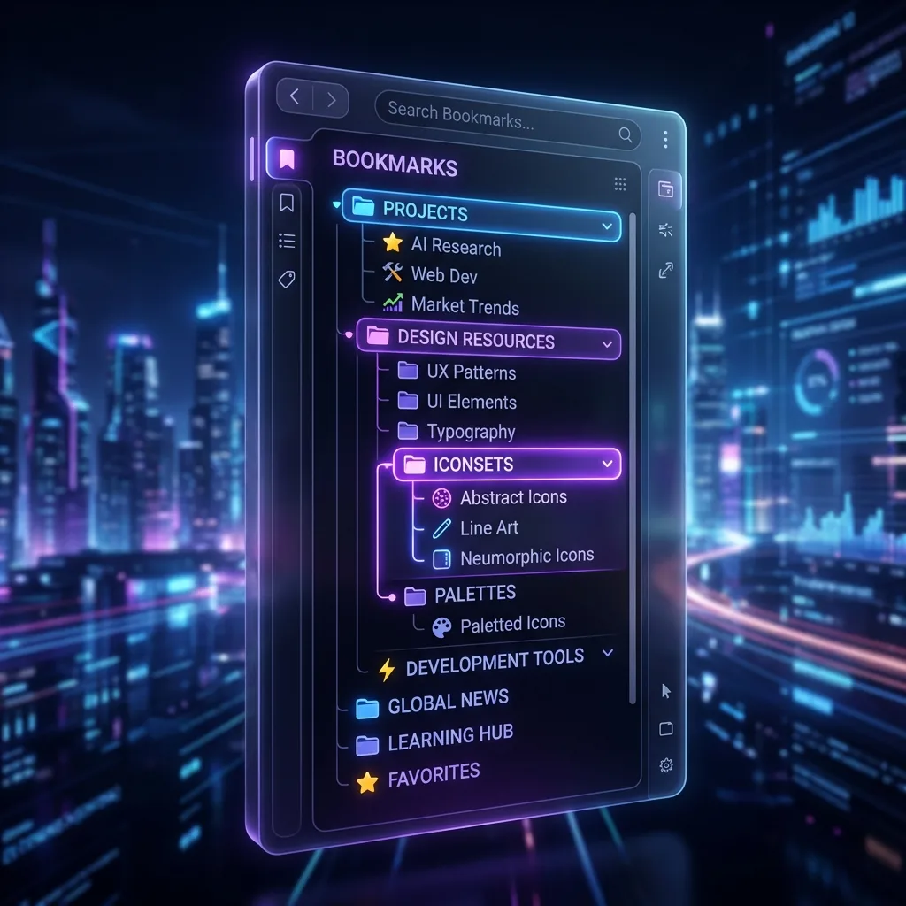

v2.9.0 から、サイドパネルのグループ一覧の上に「タブ」「ブックマーク」「統合」「メモ」の切替バーが加わりました。「タブ」は開いている単独タブ、「ブックマーク」は保存したグループ、「メモ」はメモ＆チェックリストを、それぞれ画面いっぱいに表示します（切り分けレイアウト）。「統合」はグループ一覧と単独タブを上下に並べる従来の表示で、境目をドラッグして広さを変えたり、下のエリアを折りたたんだりできます。
サイドパネルの構成
| 場所 | 内容 |
|---|---|
| 上部 | モードバー、アイコン、検索、ピンバー |
| 切替バー（v2.9.0） | 「タブ」「ブックマーク」「統合」「メモ」の切り替え |
| 中央 | グループ一覧（「統合」と「ブックマーク」で表示） |
| 下部 | 「単独タブ」「本日の履歴」「メモ」を切り替えるタブバー（「統合」と「タブ」で表示） |
| 最下部 | 📦 アーカイブ（アーカイブがあるときだけ） |
切替バーの4つのボタン
切替バーは、上部のモードが「タブ」のときに表示されます（「整理」「スクショ」「AI」「DB」のモードでは表示されません）。
| ボタン | 表示される内容 | ボタンの数字 |
|---|---|---|
| タブ | 開いているタブのうち、Chromeのタブグループに入っておらず、どのグループにも保存していない「単独タブ」を画面いっぱいに表示。下部のタブで「本日の履歴」（PRO版・トライアル中）や「メモ」にも切り替えられる | 単独タブの数 |
| ブックマーク | 保存したグループの一覧を画面いっぱいに表示 | グループの数（サブグループを含み、アーカイブは除く） |
| 統合 | 上にグループ一覧、下に「単独タブ／本日の履歴／メモ」を並べる従来の表示 | — |
| メモ | メモ＆チェックリストを画面いっぱいに表示 | メモの枚数 |
「タブ」「ブックマーク」「メモ」のどれかを選んでいる状態を切り分けレイアウト、「統合」を統合レイアウトと呼びます。選んだ画面は保存され、次に開いたときも同じ画面から始まります。
v2.9.0 に更新した方は、これまでどおり統合レイアウトで始まります。新しくインストールした方は、切り分けレイアウトの「タブ」画面から始まります。
更新した方には、切替バーのすぐ上に「新しい「切り分けレイアウト」が選べるようになりました」というお知らせが出ます。「試してみる」を押すと、切り分けレイアウトの「タブ」画面に切り替わります。お知らせは「試してみる」か「×」を押すまで表示され、押したあとは出なくなります。
ボタンの順番を並び替える
4つのボタンは、左右にドラッグすると順番を入れ替えられます（「タブ」「ブックマーク」「メモ」にマウスを乗せると「クリックで表示切替・ドラッグで順番を並び替え」と表示されます）。よく使う画面を左に置いておくと便利です。並び順は保存され、別窓など同時に開いているほかの画面にも反映されます。
切り分けレイアウトで、タブをグループに保存する
切り分けレイアウトでは「タブ」画面と「ブックマーク」画面が分かれているので、単独タブをグループに保存するときは次のどれかを使います。保存したタブは、Chromeのブックマークになります。
- 「ブックマーク」に重ねてからドロップ — 「タブ」画面の単独タブをドラッグして、切替バーの「ブックマーク」に重ねると、すぐに「ブックマーク」画面に切り替わります。そのまま保存したいグループの上でドロップします。「ブックマーク」ボタンの上で離した場合は、画面が切り替わるだけで保存はされません。
- 行のボタンから — 単独タブの行にマウスを乗せると、右側にフォルダのボタン（「フォルダに保存」）が出ます。押して「フォルダに保存」を選ぶとグループの一覧が出るので、保存先を選びます。
- 右クリックから — 単独タブを右クリックして「フォルダに保存」から保存先を選んでも、同じように保存できます。
レイアウトを切り替えるほかの方法
- アイコンから — モードバーのすぐ下に並ぶアイコンのうち、左端のレイアウト切り替えボタンで、切り分けと統合を切り替えます
- 設定から — 「設定」→「表示とテーマ」→「表示要素」の「画面レイアウト」で、「切り分け（タブ / ブックマーク）」か「統合（上下分割）」を選びます
切り分けレイアウトで「新しいグループ」のボタンを押すと、自動で「ブックマーク」画面に切り替わります。
上下の広さを変える（統合レイアウト）
リサイズと折りたたみは、統合レイアウトのときに使えます。グループ一覧と下部エリアの境目にあるリサイズハンドルを上下にドラッグします。変えた比率は保存され、次に開いたときも同じ広さで表示されます。
下部エリアを折りたたむ（統合レイアウト）
下部のタブバー右端のボタン（シェブロン）を押すと、単独タブ・本日の履歴・メモのエリアが折りたたまれ、タブバーだけの表示になります。もう一度押すと元に戻ります。グループ一覧を広く使いたいときに便利です。
おすすめの使い分け
- 整理中 — 「統合」で下部を広げて、単独タブをグループへどんどんドラッグ
- 作業中 — 「ブックマーク」でグループ一覧だけを見る（統合なら下部を折りたたむ）
- タブを片付けたいとき — 「タブ」で開いているタブだけを見て、保存するか閉じるかを決める
- メモを取りながら — 「統合」で下部のタブを「メモ」にして、グループを見ながら書く
- 探しもの — 「本日の履歴」に切り替えて、さっき閉じたページを探す（PRO版・トライアル中）
よくある質問
Q. タブとブックマーク（グループ）を1画面で同時に見たい。
切替バーの「統合」を押すと、上にグループ一覧、下に単独タブを並べた表示になります。設定の「表示とテーマ」→「表示要素」→「画面レイアウト」で「統合（上下分割）」を選んでも同じです。
Q. グループ一覧のエリアを広くするには？
切替バーの「ブックマーク」を押すと、グループ一覧が画面いっぱいに表示されます。統合レイアウトのままなら、境目のハンドルを下へドラッグするか、下部のタブバー右端のボタンで下部エリアを折りたたみます。
Q. 切り分けレイアウトで、タブをグループに保存するには？
単独タブをドラッグして切替バーの「ブックマーク」に重ね、画面が切り替わったら保存したいグループの上でドロップします。行にマウスを乗せると出る「フォルダに保存」のボタンや、右クリックの「フォルダに保存」からも保存できます。
Q. リサイズした広さは保存されますか？
はい。統合レイアウトで変更した比率は保存され、次に開いたときも同じ広さで表示されます。切替バーで選んだ画面やボタンの並び順も保存されます。
▶ 実際の操作を動画で見る
サイドバーで、ブックマークとタブをいっしょに管理する様子です。